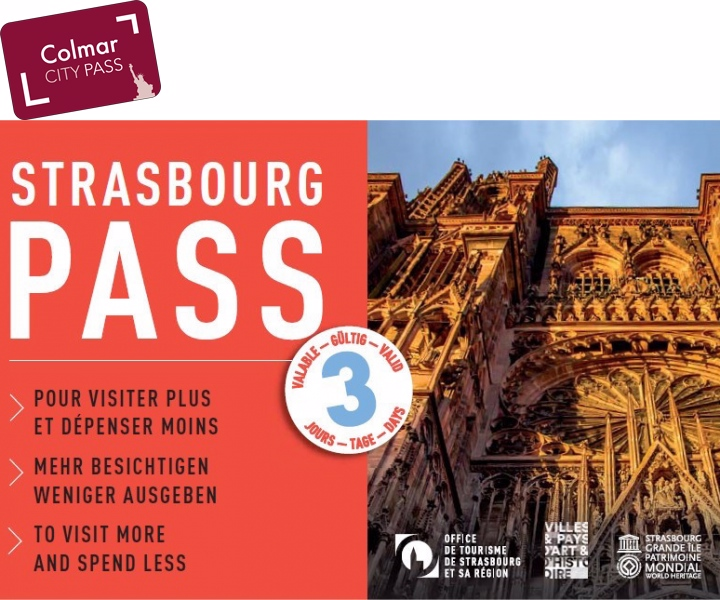

Strasburgo-Colmar(Alsazia):Posti Da Vedere
- La Petite Venice Colmar
- Collegiata Di San Martino Colmar
- Mercato Coperto Colmar
- Bartholdi Museo Colmar
- Dogana Colmar
- Musee D'Unterlinden Colmar
- Mercatini Natale Colmar
- La Route De Vins Colmar
- Eguisheim Colmar
- Grand Ilè Strasburgo
- Place Kleber Strasburgo
- Barrage Vaugan E Ponts Couverts Strasburgo
- Museo Art Cont Strasburgo [7 Euro]
- Le Petite France Strasburgo
- Museo Alsaziano Strasburgo [3,50 Euro]
- Museo Storia Città Strasburgo [6 Euro]
- Place Du Marchè Strasburgo
- Museo Opera Notre Dame Strasburgo [6 Euro]
- Maison Kammerzell Strasburgo
- Rohan Palazzo Strasburgo [6,50 Euro]
- Istituzioni Europee Di Strasburgo
- Parc De L'Orangieri Strasburgo
- Jardin Botanique Strasburgo




Conviene